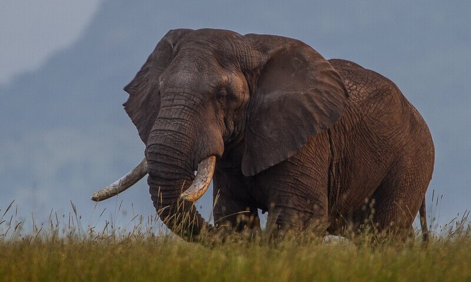
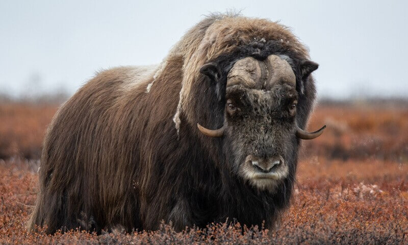

We are animals, we love animals. Read on to learn more about a random
sample of our friends.

Elephants
Elephants are the largest terrestrial animals in the world today.
The can grow to the impressive stature of three-meter shoulder height,
and can weigh as much as 5 tons.
Keep reading or
watch this video to learn more.
Bats
Today more than 1400 species of bats exists, which means that more
than 20% of all mammals are bats. Bat species range in size
from weighing only a few grams to having an almost two-meter
wingspan.
Keep reading to learn more.

Muskox
Muskox are ungulates that are more closely related to sheep and
goats, than cows. These animals live in arctic environments in the
northern hemisphere.
Keep reading to learn more.
Red panda
Red pandas belong to the family of carnivora, the same group that
includes animals like lions and bears. Red pandas mostly live of eating
bamboo, and they can grow to weigh 6,2 kg and be roughly one meter long.
Watch this video to see how cute they are.
Whales
Whales or Cetaceans are a group of marine mammals ranging in size
from the largest animal on earth, with a size upwards of 30 meters,
down to small dolphins that are no longer than a meter.
Whales are actually ungulates, meaning that they are most closely
related to animals like the moose. Whales are vocal animals,
watch this video to hear some whale song.
Lions
Lions are the most social of cats, they live in groups of 12-16
animals. Today lions are most often associated with Africa, but
they can also be found in India. Until 2000 years ago lions actually
also lived in the middle east and parts of Europe. A lion's roar
can be heard up to 10 km away.
Watch this video to hear some roaring.
Eagles
Eagles in general are large powerful predatory birds. They are
not a biological group of birds, meaning that different
species of eagles are not necessarily closely related.
Watch this video to learn about one of them, the Martial
Eagle.
Galapagos Tortoise
Galápagos Tortoise is a group of 11-12 different
species native to the Galapagos Islands. These tortoises are the
largest in the world, and can weigh as much as 400 kg.
They can also grow extremely old, the oldest known individual
lived to become more than 170 years old.
Watch this video to learn more.
Apes
Apes are our closest family, we humans belong to this group together
with chimpanses, gorillas and orangutangs etc. Except humans, apes
live in tropical regions. Common for apes are their relatively
large brains,
take a look at this orangutang that knows how to drive.